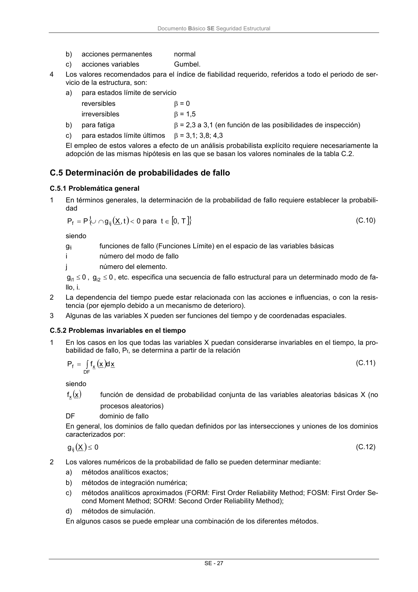

DB-SE Seguridad estructural · edición 2019-12-20 · capa oficial
Documento DB-SE-oficial · SHA-256 del PDF ec1fbfc51b28c4d62667aec480585b76fe31727ccf1615015a5d2d2677763f8f
Copia fiel del PDF fuente · Fuente oficial
Ficha de la disposición en la fuente oficial
Formatos: JSON del segmento · Markdown
f -1P - (C.9) La tabla C.1 contiene valores numéricos para la relación entre el índice de fiabilidad, β, y la probabi- lidad de fallo, Pf. Tabla C.1 Relación entre el índice de fiabilidad, b, y la probabilidad de fallo, Pf Pf 10-1 10-2 10-3 10-4 10-5 10-6 10-7 1,3 2,3 3,1 3,7 4,2 4,7 5,2 2 Los valores numéricos de la probabilidad de fallo (y de los correspondientes índices de fiabilidad) a los que hacen referencia los principios de C.3 y que se pueden determinar según los métodos men- cionados en C.5, representan valores nominales y no describen la frecuencia real de fallos estructu- rales. Las diferencias sustanciales entre la probabilidad de fallo nominal y la frecuencia real de fa- llos estructurales se debe por un lado a que en realidad los fallos son debidos, en muchos casos, a errores humanos y, por otro lado, a las simplificaciones introducidas a través de los modelos. Debido a que las probabilidades de fallo se deben interpretar como valores nominales, las probabi- lidades de fallo admisibles deben basarse en los resultados de una calibración. El empleo de valo- res de este tipo para caracterizar la fiabilidad requerida de una estructura está relacionado con un conjunto coherente y específico de modelos probabilistas y de modelos estructurales. No es admi- sible el empleo de valores calibrados para la probabilidad de fallo admisible (o para el índice de fia- bilidad requerido) en combinación con otros modelos, ya que conduce a resultados distorsionados en cuanto al nivel de fiabilidad. 3 La tabla C.2 representa valores calibrados para el índice de fiabilidad requerido, referidos a todo el periodo de servicio de la estructura, en función de las consecuencias de un fallo estructural y del coste relativo de un incremento de la fiabilidad. Tabla C.2 Valores nominales, referidos a todo el periodo de servicio, para el índice de fiabilidad reque- rido Coste relativo para incrementar la fiabilidad Consecuencias de un fallo estructural despreciables pequeñas moderadas grandes elevado 0 1,5 2,3 3,1 moderado 1,3 2,3 3,1 3,8 bajo 2,3 3,1 3,8 4,3 Los valores de la tabla C.2 se han deducido aplicando los métodos de los valores de cálculo (C.6), adoptando las siguientes hipótesis para las funciones de distribución de los modelos probabilistas: a) modelos de resistencia lognormal o Weibull Documento Básico SE Seguridad Estructural SE - 27 b) acciones permanentes normal c) acciones variables Gumbel. 4 Los valores recomendados para el índice de fiabilidad requerido, referidos a todo el periodo de ser- vicio de la estructura, son: a) para estados límite de servicio reversibles = 0 irreversibles = 1,5 b) para fatiga = 2,3 a 3,1 (en función de las posibilidades de inspección) c) para estados límite últimos = 3,1; 3,8; 4,3 El empleo de estos valores a efecto de un análisis probabilista explícito requiere necesariamente la adopción de las mismas hipótesis en las que se basan los valores nominales de la tabla C.2.
